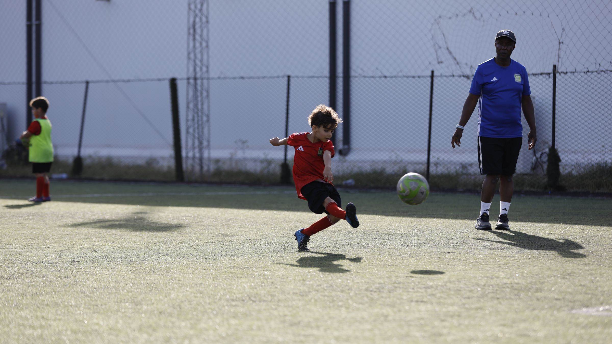
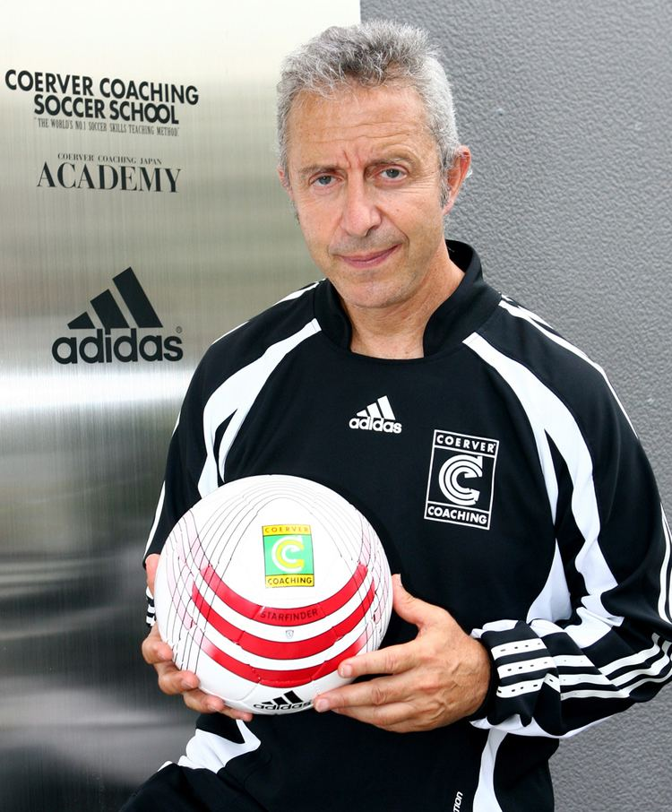
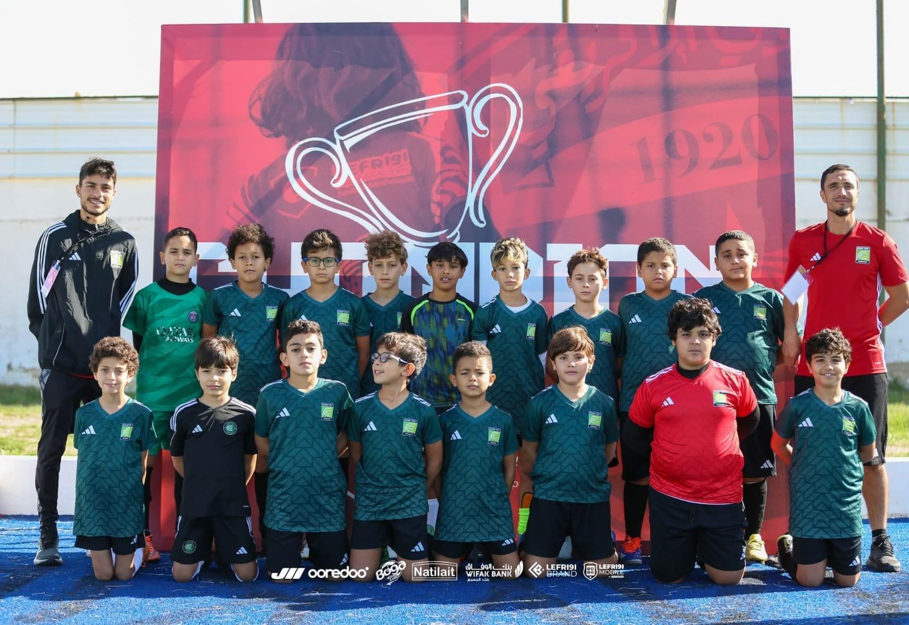

La méthode
Coerver®
La méthode d'enseignement du football N°1 au monde.
Aujourd'hui en Tunisie.
Né d'une vision
révolutionnaire
Tout commence avec Wiel Coerver, entraîneur néerlandais de légende, qui a révolutionné la pensée footballistique dans les années 1970. Sa conviction : chaque joueur, quel que soit son talent naturel, peut devenir techniquement excellent avec la bonne méthode d'enseignement.
En 1984, Alfred Galustian (ancien joueur de Wimbledon) et Charlie Cooke (légende de Chelsea) s'inspirent de la vision de Wiel Coerver pour fonder Coerver® Coaching — un programme complet d'éducation footballistique basé sur le développement de la technique individuelle au service du jeu collectif.
Aujourd'hui, près de 42 ans plus tard, la méthode est implantée dans plus de 50 pays, soutenue par la FIFA, l'UEFA et Adidas, et a formé plus d'un million de joueurs à travers le monde.

Il faut d'abord rendre un individu techniquement parfait avant qu'il puisse exceller collectivement.
Le pourquoi, le comment, le quoi
L'amour du jeu
avant tout
Notre objectif est d'encourager l'amour d'un football technique chez les joueurs, les entraîneurs et les parents. Nous croyons que toute amélioration commence par une passion sincère pour le jeu. Un enfant qui aime le ballon apprend deux fois plus vite.
Science et
progression graduée
Notre curriculum révolutionnaire, soutenu par la science du mouvement et du développement de l'enfant, a changé la façon dont le jeu est enseigné dans le monde entier. Chaque exercice augmente progressivement la pression jusqu'à atteindre la vitesse du match réel.
Transformation
technique et humaine
Vos joueurs et entraîneurs transformeront leurs compétences en utilisant la méthode Coerver® dans nos académies et stages. Coerver® développe le joueur, mais aussi la personne — confiance, discipline et créativité acquises sur le terrain.
La pyramide de
développement du joueur
Le système Coerver® est structuré autour de la Pyramide de Développement du Joueur — 6 niveaux interconnectés qui guident chaque joueur de ses premiers pas avec le ballon jusqu'à la maîtrise complète du jeu.
La base absolue de tout joueur Coerver®. Sans maîtrise du ballon, rien n'est possible. Exercices individuels en répétition avec les deux pieds — toucher, contrôle, jonglerie, conduite. Le joueur doit sentir le ballon comme une extension naturelle de son corps. Plus un joueur maîtrise le ballon tôt, plus sa progression sera rapide et durable.
Un premier contact parfait est l'une des compétences les plus valorisées dans le football moderne. Ce niveau développe la capacité du joueur à recevoir le ballon dans n'importe quelle situation et à le redistribuer avec précision, vitesse et créativité — les deux pieds, de la tête, en mouvement.
Le cœur de l'identité Coerver®. La Pyramide des Moves classifie 43 gestes techniques individuels — crochets, feintes, changements de direction, stops and starts — pour battre un adversaire et créer de l'espace. Chaque joueur apprend à aller au duel avec confiance, en attaque comme en défense.
La vitesse dans le football moderne n'est pas seulement physique — c'est aussi la vitesse de décision. Ce niveau développe l'agilité, la vivacité et la force avec et sans ballon, ainsi que la capacité à exécuter les gestes techniques à pleine vitesse, sous pression, comme en match.
Marquer des buts est le but du football. Ce niveau développe la technique et la confiance devant le but — tirs des deux pieds, de la tête, en mouvement, sous pression, de différentes distances et angles. La créativité et la prise de risque calculée sont encouragées pour développer des finisseurs naturels.
Le sommet de la pyramide intègre toutes les compétences individuelles dans des situations de jeu réelles. Rondos, jeux en petits groupes, contre-attaques rapides, combinaisons — les joueurs apprennent à prendre les bonnes décisions sous haute pression, à combiner avec leurs coéquipiers et à dominer collectivement.
Les 5S — l'adn de
chaque séance
Chaque session Coerver® Tunisie intègre les 5 qualités fondamentales du Code Coerver® — un cadre garantissant que chaque joueur progresse sur tous les aspects du jeu, à chaque entraînement.
Maîtrise technique individuelle poussée — la base de tout le système.
Vitesse physique et mentale — exécuter vite, décider vite, agir vite.
Force physique et mentale — résister à la pression, garder le ballon.
Mentalité, passion et amour du jeu — l'état d'esprit du champion.
Intelligence du jeu et prise de décision — lire le jeu, anticiper.

La méthode mondiale
adaptée à notre terrain
Coerver® Coaching Tunisie applique l'intégralité du curriculum international officiel, adapté aux spécificités du contexte tunisien. Nos coachs, certifiés par Coerver® International, maîtrisent chaque niveau de la pyramide et les transmettent avec passion.
Plus de 150 enfants font aujourd'hui confiance à notre académie. Leur progression est visible, mesurable et réelle — et la demande ne cesse de croître. Le football tunisien a soif de méthode, de rigueur et d'excellence. Nous y répondons.
Chaque séance suit le programme officiel validé par Coerver® International.
Notre équipe est formée et certifiée selon les standards Coerver® internationaux.
Chaque enfant évolue dans un groupe adapté à son âge et à ses capacités réelles.
Coerver® Tunisie est un programme technique indépendant — compatible avec tout club.
Enseignée dans
les plus grands clubs
La méthode Coerver® n'est pas réservée aux académies locales. Elle est appliquée et recommandée par les plus grandes institutions du football mondial.